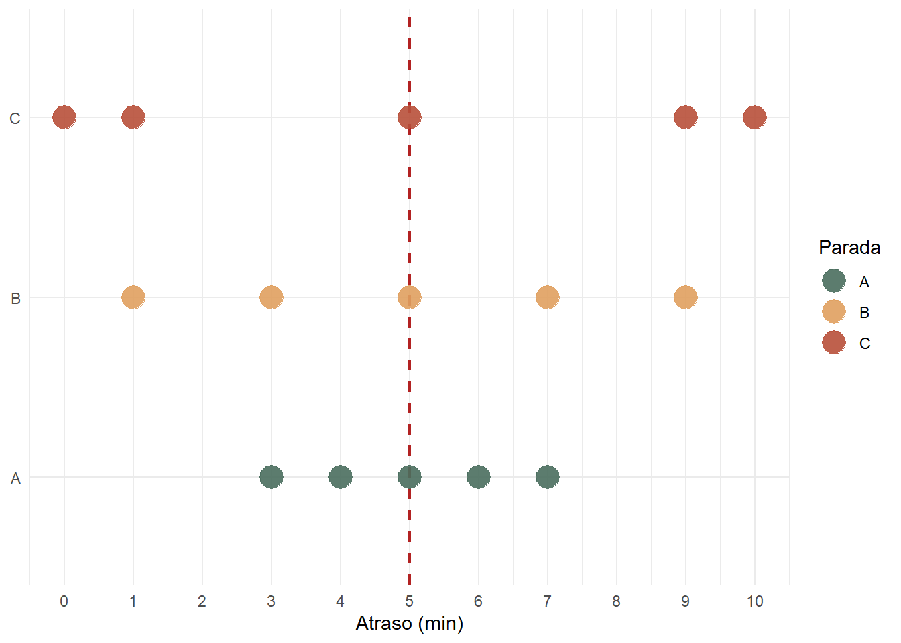

tempos <- c(4, 6, 8, 12, 15)
# Cálculo "força bruta": soma dividida pelo número de observações
sum(tempos) / length(tempos)[1] 9Para quem preferir esta aula em formato audiovisual, há uma playlist de videoaulas do meu canal do YouTube sobre Análise Exploratória de Dados com R. O conteúdo deste capítulo está compreendido nos vídeos 02 e 03.
Estatísticas descritivas são métricas que resumem determinadas características de um conjunto de dados em um único valor numérico. Quando calculamos estatísticas descritivas, nosso objetivo é transformar uma determinada variável da base de dados, potencialmente com centenas ou milhares de observações, em um punhado de indicadores que capturam estes atributos.
Duas famílias de medidas são fundamentais. As medidas de posição (ou de tendência central) indicam onde os dados se concentram: qual é o valor “típico” de uma variável. As medidas de dispersão indicam o quanto os dados se afastam desse valor central: se as observações estão agrupadas em torno do mesmo ou mais espalhadas. Usadas em conjunto, essas medidas fornecem uma descrição concisa sobre as variáveis de qualquer base de dados.
A escolha das medidas adequadas depende da escala de mensuração da variável, que podem ser do tipo numérica ou categórica. Para variáveis numéricas, dispõe-se de um amplo repertório. Média, mediana, moda, percentis e quartis são comuns como medidas de posição. Por sua vez, variância, desvio-padrão, amplitude e intervalo interquartil são bastante utilizadas para indicar o nível de dispersão. Para variáveis categóricas, nosso interesse é principalmente na proporção de cada categoria encontrada, que serve como uma métrica de posição. Medidas de dispersão são menos comum para este tipo de variável, apesar de haver propostas nesse sentido.
Para dados numéricos, as medidas de posição mais comuns são a média, a mediana, a moda e os percentis. Cada uma descreve um aspecto diferente de onde os dados se localizam na distribuição.
A média aritmética é a medida de posição mais usada. Ela representa o ponto de equilíbrio da distribuição: se todos os valores fossem redistribuídos igualmente entre os indivíduos, cada um receberia exatamente a média.
O cálculo é direto. Para uma amostra de tamanho \(n\), a média amostral \(\bar{X}\) é dada por:
\[ \bar{X} = \frac{1}{n} \sum_{i=1}^{n} x_i \]
Exemplo. Considere os tempos de espera (em minutos) em um ponto de ônibus, registrados para uma amostra de cinco moradores:
tempos <- c(4, 6, 8, 12, 15)
# Cálculo "força bruta": soma dividida pelo número de observações
sum(tempos) / length(tempos)[1] 9Note, entretanto, que não precisamos calcular a média na “força bruta” como realizado acima. No R base, temos uma função específica para cumprir este papel, a mean(), que recebe como principal argumento o vetor de dados numérico:
# Função predefinida
mean(tempos)[1] 9Observe como os dois cálculos produzem o mesmo resultado: 9 minutos.
A mediana é o valor central da distribuição quando os dados estão ordenados em ordem crescente. Ela divide a amostra em dois grupos iguais: metade das observações fica abaixo dela, metade fica acima.
O procedimento de cálculo tem dois casos, dependendo se \(n\) é ímpar ou par.
Caso 1 (\(n\) ímpar): Ordene os dados e selecione o valor na posição \((n + 1) / 2\). Verifique para produzir valores de um determinado vetor de forma crescente, podemos utilizar a função sort()1:
tempos_crescente <- sort(tempos)
tempos_crescente[1] 4 6 8 12 15Com este vetor com valores crescentes, podemos então encontrar qual valor está na posição \((n+1)/2\) da seguinte maneira:
# Quantidade de valores (tamanho do vetor)
n <- length(tempos_crescente)
# Posição central
pos <- (n + 1) / 2
tempos_crescente[pos][1] 8Note que com cinco observações, o valor central está na posição 3. Deste modo, e a mediana desta base de dados é 8 minutos.
Caso 2 (\(n\) par): Ordene os dados e calcule a média entre os dois valores centrais, nas posições \(n/2\) e \(n/2 + 1\).
tempos2 <- c(4, 6, 8, 10, 12, 15)
tempos2_crescente <- sort(tempos2)
n2 <- length(tempos2_crescente)
# Duas posições centrais
pos1 <- n2 / 2
pos2 <- n2 / 2 + 1
(tempos2_crescente[pos1] + tempos2_crescente[pos2]) / 2[1] 9Veja que o procedimento para calcular a mediana na “força bruta” envolve uma quantidade razoável de código, pois primeiro temos que ordenar, depois encontrar a posição e, por fim, achar o valor daquela posição no vetor. Felizmente, no R base podemos obter esse resultado com uma linha de código utilizando a função median():
median(tempos) # n ímpar → mediana = 8[1] 8median(tempos2) # n par → mediana = (8 + 10) / 2 = 9[1] 9A moda é o valor de uma variável numérica (ou categoria de uma variável categórica) que ocorre com maior frequência no conjunto de dados. Em variáveis contínuas, representadas por números racionais (\(\mathbb{Q}\)) ou reais (\(\mathbb{R}\)), geralmente há valores com mais de uma casa decimal, fazendo com que raramente haja repetições destes valores. Isso faz com que a moda seja pouco informativa nestes casos. Ela é mais útil quando temos variáveis numéricas inteiras (\(\mathbb{Z}\)) com bastante repetição de valores, a exemplo da quantidade de automóveis presentes no domicílio, ou variáveis categóricas, como o número de automóveis por domicílio ou o modo de transporte escolhido para as viagens a trabalho.
O R base não possui uma função adequada para calcular a moda estatística. O comando mode() retorna o tipo de objeto em R (como "numeric" ou "character"), não a moda da distribuição. A forma mais direta é combinar table(), para produzir uma tabela de frequências, juntamente com a função which.max(), que retorna a posição do elemento de maior frequência em um determinado vetor. Comecemos primeiro gerando um vetor com dados de número de automóveis por domicílio em um conjunto de 10 residências:
# Número de automóveis por domicílio em dez residências
autos <- c(0, 1, 1, 2, 1, 3, 0, 1, 2, 1)
# Tabela de frequências
tb <- table(autos)
tbautos
0 1 2 3
2 5 2 1 Para interpretar o resultado de uma objeto produzido por uma função table(), devemos sempre entender que a primeira linha indicam os níveis/categorias possíveis da base de dados e a segunda linha a quantidade de vezes que esses níveis/categorias aparecem. Observe para o caso acima que temos o valor 3 automóveis com frequência igual a 1 (última coluna).
Um fato interessante sobre o objeto criado por esta função table() é que podemos obter os valores dos níveis/categorias passando-o como argumento na expressão names(), ao passo que o valor das frequências pode ser gerado convertendo esse objeto para um vetor numérico com a função as.numeric(). Observe abaixo:
# Níveis/categorias possíveis de quantidade de automóveis em casa:
names(tb)[1] "0" "1" "2" "3"# Frequências observadas para cada um desses níveis/categorias:
as.numeric(tb)[1] 2 5 2 1Entendido este funcionamento, podemos determinar este valor de maior frequência (moda) com:
# Posição de tb com o valor de maior frequência
pos_max <- which.max(tb)
# Obtenção do valor de maior frequência
as.numeric(tb[pos_max])[1] 5Neste exemplo, o valor 1 aparece cinco vezes e é a moda da distribuição. Isso significa que é muito comum encontrar residências com somente um automóvel em casa nessa base de dados!
O percentil \(P\) é o valor abaixo do qual uma proporção \(P/100\) dos dados se encontra. O percentil 50 (\(P_{50}\)) coincide com a mediana os percentis 25 (\(P_{25}\)) e 75 (\(P_{75}\)) são chamados de primeiro quartil (\(Q_1\)) e terceiro quartil (\(Q_3\)), respectivamente.
Existem várias formas de calcular percentis, que seguem uma lógica bastante parecida com a da mediana, mostrada anteriromente. Uma maneira bem simples de produzir o resultado de percentil pode ser de acordo com o seguinte conjunto de etapas:
Suponha dados de distância de viagem (em metros) de 10 indivíduos abaixo, sobre o qual queiramos calcular o percentil 85 (\(P_{85}\)):
dist <- c(2000, 1500, 3800, 4000, 800, 9000, 15000, 100, 2000, 7100)Vamos obter inicialmente estes valores ordenados de forma crescente (Passo 1):
dist_crescente <- sort(dist)
dist_crescente [1] 100 800 1500 2000 2000 3800 4000 7100 9000 15000Na sequência, vamos calcular a posição do percentil 85 (Passo 2):
P <- 85
n <- length(dist_crescente)
# Posição
R <- (P / 100) * n
R[1] 8.5Note que \(R = 8.5\) não é inteiro, logo temos que obter o seu valor inteiro superior (ou seja, na posição 9). No R base, podemos extrair esse valor por meio da função ceiling()2 (Passo 3):
pos <- ceiling(R)
pos[1] 9Sendo assim, passando essa posição no vetor de distâncias ordenado crescentemente, temos que \(P_{85}\) é:
dist_crescente[pos][1] 9000Assim como nos outros casos, não precisamos obter valores de percentis com essa quantidade de código. Para tanto, utilizamos a função quantile() que permite calcular simultaneamente mais de um percentil com seu parâmetro probs:
quantile(dist, probs = c(0.25, 0.50, 0.75, 0.85, 0.90)) 25% 50% 75% 85% 90%
1625 2900 6325 8335 9600 Observe que o valor do percentil 85 gerado pela função quantile() (8335) é diferente daquele que geramos pelo método de 3 passos sugerido inicialmente (9000). Isso ocorre porque o R implementa 9 métodos diferentes de cálculo de quantis, selecionáveis pelo argumento type de quantile(). O método padrão da função quantile() é o type = 7, que usa interpolação linear. O método que utilizamos é o type = 1, vale a pena reproduzir com este parâmetro e testar por aí. Para uma comparação entre os métodos, veja Hyndman & Fan (1996).
A média e as demais medidas de posição descrevem onde os dados estão centrados, mas não revelam o quanto eles variam. Considere os dados abaixo sobre atrasos (em minutos) de um ônibus ao longo do dia, registrados em três paradas diferentes (A, B e C):
parada_a <- c(3, 4, 5, 6, 7)
parada_b <- c(1, 3, 5, 7, 9)
parada_c <- c(0, 1, 5, 9, 10)Vamos calcular as médias em cada uma destas paradas:
mean(parada_a)[1] 5mean(parada_b)[1] 5mean(parada_c)[1] 5Observe como os valores do atraso médio são idênticos (5 minutos). Note, entretanto, que as experiências dos passageiros nas três paradas são muito diferentes. Enquanto na parada A os atrasos variam pouco, na parada C eles oscilam entre zero e dez minutos, uma diferença não capturada pela média. Podemos avaliar essa diferença no gráfico abaixo, onde cada ponto representa uma parada (eixo y) e seu respectivo valor de atraso (eixo x). No Capítulo 5, entenderemos como produzir visualizações como esta no R.

As medidas de dispersão quantificam essa variação em torno da média. Abordaremos aqui as medidas de Variância, Desvio-padrão, Amplitude e Intervalo Interquartil.
Em essência, a variância dimensiona o quanto os valores de uma determinada variável se encontram longe da sua média. Para tanto, variância calcula a média dos desvios quadráticos em relação à média dos dados. Se essa descrição não te parece intuitiva, vamos entender, passo a passo, como o cálculo da variância funciona:
Passo 1: calcule os desvios de cada observação \(i\) (\(d_i\)) em relação à média, fazendo \(d_i = x_i - \bar{X}\). Observe que o conceito de desvio é simplesmente a diferença numérica entre um valor específico de uma observação \(i\) (\(x_i\)) e a sua média.
Passo 2: eleve cada desvio ao quadrado, \((x_i - \bar{X})^2\).
Passo 3: calcule a média dos desvios quadráticos. Para uma amostra, divide-se por \(n - 1\) (e não por \(n\)) para obter aquilo que chamamos de um estimador não-viesado da variância populacional em Estatística. Não se preocupe com isto agora, pois é tema para o futuro.
Neste momento, você pode estar se perguntando “por que elevar os desvios ao quadrado, ao invés de tomar a sua média diretamente?”. Note que a soma desses desvios \(\sum_{i=1}^{n} d_i\) é sempre zero, pois os desvios positivos e negativos se cancelam, o que faz com que a média desses desvios, ou seja \(\bar{d_i}=\frac{1}{n} \sum_{i=1}^{n} d_i\), seja também zero. Uma maneira de contornar essa situação é elevar os desvios ao quadrado antes de calcular a média, pois isso tornam positivos os valores negativos de desvio.
Se quisermos representar os passos 1 a 3 do cálculo variância amostral (dada por \(s^2\)) em uma única fórmula, fazemos então:
\[ s^2 = \frac{1}{n-1} \sum_{i=1}^{n} (x_i - \bar{X})^2 \]
Vamos calcular a variância amostral na “força bruta”. Começamos primeiro produzindo os desvios:
x <- parada_b
n <- length(x)
# Desvios em relação à média
desvios <- x - mean(x)
desvios[1] -4 -2 0 2 4Na sequência obtemos os desvios quadráticos e calculamos sua média com o denonimador \(n-1\) ao invés de \(n\):
# Desvios quadráticos
desvios^2[1] 16 4 0 4 16# Variância amostral
sum(desvios^2) / (n - 1)[1] 10Obviamente, há uma maneira mais direta, que pode ser realizada com a função var():
# Função predefinida
var(x)[1] 10Uma limitação da variância é que sua unidade de medida é o quadrado da unidade original. Por exemplo, se os tempos são medidos em minutos, a variância é expressa em minutos ao quadrado (\(min^2\), o que dificulta sua interpretação direta. Para tanto, temos uma alternativa interessante denominada Desvio-padrão.
O desvio-padrão resolve a limitação da variância ao tomar sua raiz quadrada, devolvendo o resultado à unidade de medida original dos dados. Representado por \(s\), o desvio-padrão possui a seguinte formulação:
\[ s = \sqrt{s^2} = \sqrt{\frac{1}{n-1} \sum_{i=1}^{n} (x_i - \bar{X})^2} \]
Calculando, na “força bruta”, temos:
sqrt(sum((x - mean(x))^2) / (n - 1))[1] 3.162278# Ou equivalentemente
sqrt(var(x))[1] 3.162278Porém, temos a função sd()3, preconcebida para esta função:
sd(x)[1] 3.162278Aplicando às três paradas, o desvio-padrão confirma o que o gráfico mostrava:
sd(parada_a)[1] 1.581139sd(parada_b)[1] 3.162278sd(parada_c)[1] 4.527693A parada C tem o maior desvio-padrão (4.53 min), indicando maior variabilidade nos atrasos. A parada A tem o menor (1.58 min).
A amplitude é uma medida de dispersão mais simples, refletindo meramente a diferença entre o maior e o menor valor do conjunto de dados, que podem ser obtidos pelas funções max() e min():
max(parada_c) - min(parada_c)[1] 10Uma outra maneira de obter esses resultados é por meio das funções range() e diff(). Enquanto a primeira retorna um vetor com os valores mínimo e máximo da base de dados, a segunda calcula a diferença entre a segunda e a primeira observação desse vetor4.
min_max <- range(parada_b)
min_max[1] 1 9amp <- diff(min_max)
amp[1] 8A principal limitação da amplitude é sua sensibilidade extrema a valores extremos. Um único valor atípico, muito alto ou muito baixo, pode inflar consideravelmente a amplitude, sem que isso reflita o comportamento da maioria dos dados. É aí que entra em cena o Intervalo Interquartil.
O intervalo interquartil (IQR, do inglês interquartile range) mede a amplitude do “meio” da distribuição: a diferença entre o terceiro e o primeiro quartil.
\[ \text{IQR} = Q_3 - Q_1 \]
Como ele cobre apenas os 50% centrais dos dados, é muito mais robusto a valores extremos do que a amplitude. Para obtê-lo manualmente, fazemos:
q1 <- quantile(parada_c, 0.25)
q125%
1 q3 <- quantile(parada_c, 0.75)
q375%
9 iqr <- q3 - q1
iqr # Veja que aparece um 75% acima do valor 8 (herdado de q3), mas que deve ser desconsiderado.75%
8 Assim como as demais estatísticas, também é possível calcular o IQR por meio de uma função pré-definida no R base:
IQR(parada_c)[1] 8Para variáveis categóricas, as medidas de posição baseadas em operações aritméticas (como média e mediana) não fazem sentido. Não é possível calcular a “média” de uma variável que represente o modo de transporte que a pessoa utiliza na viagem ao trabalho, por exemplo. O que importa, nesse caso, é conhecer quais categorias existem, com que frequência cada uma aparece e qual delas é a mais comum.
Considere uma amostra de 20 pessoas pesquisadas sobre o modo de transporte principal utilizado nas viagens ao trabalho:
modo <- c(
"onibus", "automovel", "caminhada", "automovel", "bicicleta",
"onibus", "automovel", "motocicleta", "onibus", "automovel",
"caminhada", "onibus", "automovel", "bicicleta", "onibus",
"automovel", "motocicleta", "onibus", "automovel", "caminhada"
)Com a função unique(), é possível listar as categorias distintas presentes na variável, sem repetição:
unique(modo)[1] "onibus" "automovel" "caminhada" "bicicleta" "motocicleta"Vimos anteriormente (Seção 3.2.3) que a função table() nos ajudou a calcular a moda de uma variável relativa à quantidade de automóveis em cada residência de uma pesquisa. De maneira análoga, vamos utilizá-la aqui para identificar a frequência absoluta de cada nível/categoria da variável categórica modo que criamos acima:
tab_modo <- table(modo)Para obter as proporções (frequências relativas), aplica-se prop.table() sobre o resultado de table():
prop.table(tab_modo)modo
automovel bicicleta caminhada motocicleta onibus
0.35 0.10 0.15 0.10 0.30 Multiplicando por 100, obtemos os percentuais:
prop.table(tab_modo) * 100modo
automovel bicicleta caminhada motocicleta onibus
35 10 15 10 30 Nesse conjunto de dados, o automóvel é o modo mais frequente, com 35% das respostas. Esse é exatamente o conceito de moda aplicado a variáveis categóricas: a categoria com maior frequência. Conforme visto anteriormente na seção sobre moda, o R não possui uma função nativa para isso, mas a combinação which.max(table()) resolve o caso:
names(which.max(table(modo)))[1] "automovel"1. Dado o vetor de salários mensais (em R$): c(1800, 2200, 1500, 3100, 2800, 1900, 4500, 2100):
2. Considere dois grupos de estudantes com as seguintes notas:
c(6, 6, 7, 7, 7, 8, 8, 9)c(3, 4, 6, 7, 8, 9, 10, 10)3. O vetor abaixo registra o grau de instrução de 15 entrevistados em uma pesquisa domiciliar:
instrucao <- c(
"fundamental", "medio", "superior", "medio", "fundamental",
"medio", "superior", "medio", "fundamental", "medio",
"superior", "medio", "sem instrucao", "fundamental", "medio"
)A função sort() possui um argumento decreasing que tem, por padrão, o valor FALSE, ou seja, o ordenamento é crescente. Caso queiramos ordenamento decrescente, poderíamos reajustá-lo para decreasing = TRUE↩︎
Curiosidade: ceiling, em inglês, significa teto. Do mesmo modo, podemos obter o valor inteiro inferior por meio da função floor(), nome que pode ser traduzido como piso/chão↩︎
do inglês, standard deviation↩︎
A função diff(), na verdade, calcula as diferenças entre os valores consecutivos de um vetor. Por exemplo, seja um vetor v dado por v <- c(2, 5, 10), a operação diff(v) retornará o vetor c(3,5), isto é, as diferenças entre os valores 5 e 2 e entre 10 e 5↩︎